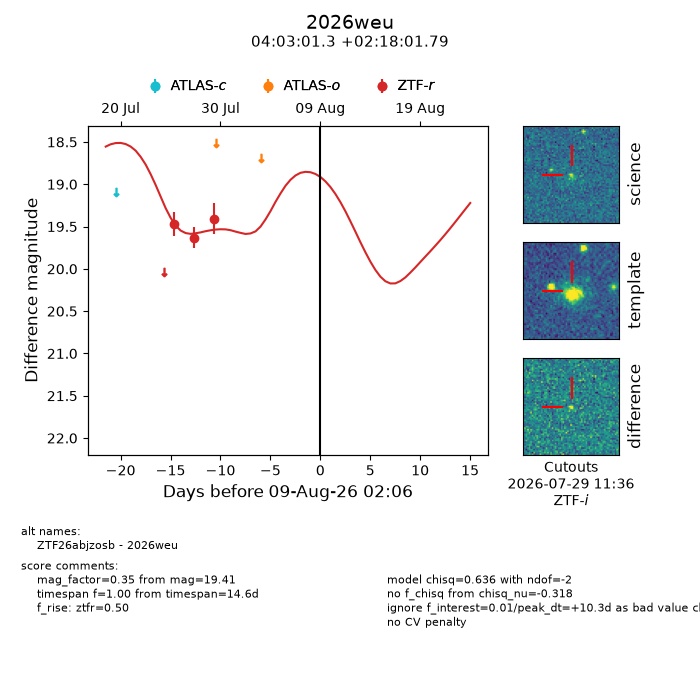
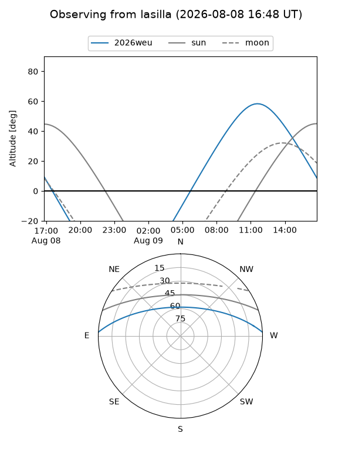
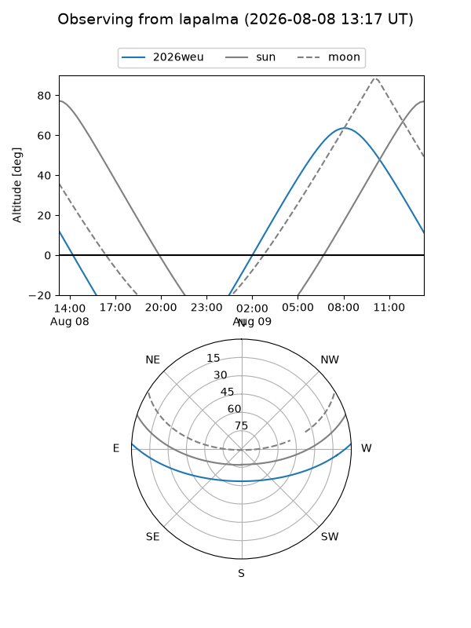
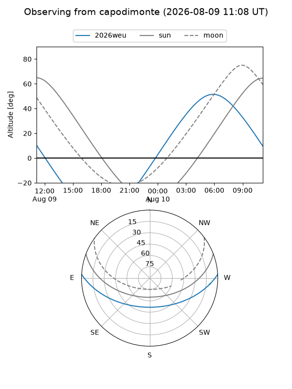
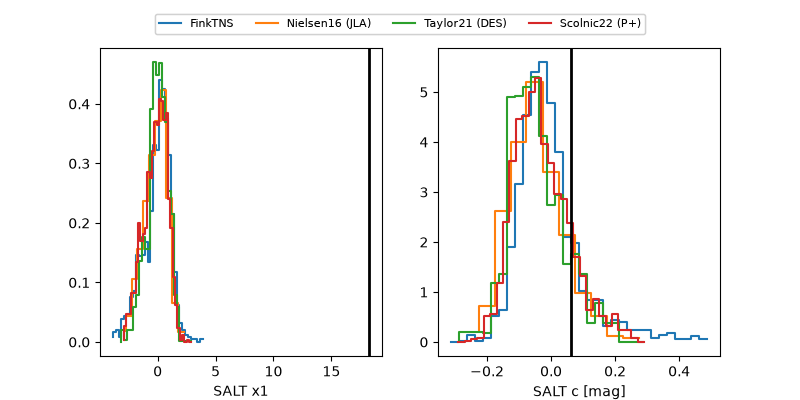

2026weu
Target 2026weu at 2026-08-09 13:32
Aliases and brokers:
FINK-ZTF: ztf.fink-portal.org/ZTF26abjzosb
Lasair-ZTF: lasair-ztf.lsst.ac.uk/objects/ZTF26abjzosb
ALeRCE-ZTF: alerce.online/object/ZTF26abjzosb
YSE-PZ: ziggy.ucolick.org/yse/transient_detail/2026weu
TNS name: wis-tns.org/object/2026weu
Direct TNS query: direct search
alt names
ZTF26abjzosb (ztf,fink_ztf)
2026weu (tns,yse)
Coordinates:
equatorial (ra, dec) = 60.7552,+2.30050
equatorial (HMS+DMS) = 04:03:01.26,+02:18:01.79
galactic (l, b) = (188.2170,-35.30551)
Flags:
TNS type: nan
peak dt: +10.8
Photometry:
last ztfr=19.41
3 ztfr detections
Lightcurve

Visibility



Additional plots
